SE(2) Motion Planning#
In this tutorial, we plan motions in \(\mathrm{SE}(2)\) for three robots, a holonomic disc robot, a differential-drive robot with a rectangular footprint in an office corridor, and a car that parks between two parked cars. We also check footprints against a distance grid and keep the robots away from walls with a clearance metric.

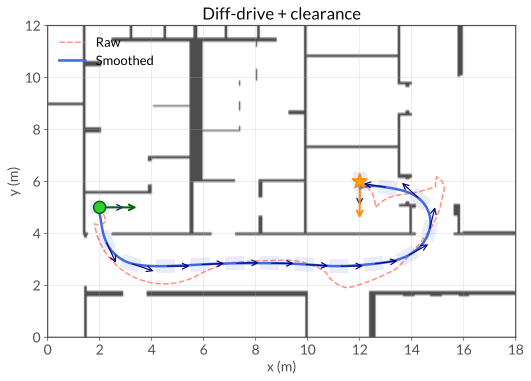
The differential-drive robot under the clearance metric, the result of step 6. The planner’s path is dashed, the returned path solid, with footprints along it.#
The full script is examples/tutorials/se2_planning.py, and the C++ version is
examples/tutorials/se2_planning.cpp. Run it from examples/tutorials, where the corridor
map lives. Planning needs the Linux or macOS wheel (see
Installation).
1. Describe poses and footprints#
A pose in \(\mathrm{SE}(2)\) is a triple \((x, y, \theta)\), a planar position and a heading.
import numpy as np
import geodex
from geodex import collision as gc
se2 = geodex.SE2()
pose = np.array([5.0, 3.0, np.pi / 4.0]) # (x, y, theta)
Full example: examples/tutorials/se2_planning.py
#include <geodex/collision/collision.hpp>
#include <geodex/geodex.hpp>
#include <geodex/planning/plan.hpp>
#include <ompl/base/DiscreteMotionValidator.h>
geodex::SE2<> se2;
Eigen::Vector3d pose{5.0, 3.0, M_PI / 4.0}; // (x, y, theta)
Full example: examples/tutorials/se2_planning.cpp
A robot’s footprint is its outline, a set of body-frame points that move rigidly with
the pose. A disc needs only its radius. geodex::collision::PolygonFootprint
stores sample points along the edges of a convex polygon, samples_per_edge per edge.
# A circular footprint is a single radius. Collision reduces to a point query
# against an obstacle distance field inflated by this value.
robot_radius = 0.3
# Build a rectangular footprint with the factory.
rect_fp = gc.PolygonFootprint.rectangle(half_length=0.35, half_width=0.25,
samples_per_edge=6)
# Build any convex polygon from body-frame vertices in counter-clockwise order.
verts = [
np.array([-0.35, -0.30]), # rear right
np.array([0.35, -0.20]), # front right
np.array([0.35, 0.20]), # front left
np.array([-0.35, 0.30]), # rear left
]
poly_fp = gc.PolygonFootprint(verts, samples_per_edge=4)
Full example: examples/tutorials/se2_planning.py
// A circular footprint is a single radius. Collision reduces to a point query
// against an obstacle distance field inflated by this value.
constexpr double robot_radius = 0.3;
// Build a rectangular footprint with the factory.
auto rect_fp =
gc::PolygonFootprint::rectangle(/*half_length=*/0.35, /*half_width=*/0.25,
/*samples_per_edge=*/6);
// Build any convex polygon from body-frame vertices in counter-clockwise order.
std::vector<Eigen::Vector2d> verts = {
{-0.35, -0.30}, // rear right
{0.35, -0.20}, // front right
{0.35, 0.20}, // front left
{-0.35, 0.30}, // rear left
};
gc::PolygonFootprint poly_fp(verts, /*samples_per_edge=*/4);
Full example: examples/tutorials/se2_planning.cpp

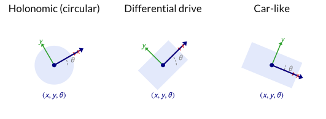
The three robots at a pose, with the body axes \(x\) (red, forward) and \(y\) (green, left).#
Four to six samples per edge suit most footprints on a centimeter-scale grid.
2. Choose a metric#
geodex::SE2LeftInvariantMetric weighs the forward, sideways and turning speeds
of the robot,
and a weight \(w\) makes a unit of that motion cost \(\sqrt{w}\).
\(w_x\) |
\(w_y\) |
\(w_\theta\) |
Effect |
Robot |
|---|---|---|---|---|
1.0 |
1.0 |
1.0 |
Every direction and turning cost the same |
Holonomic |
1.0 |
10.0 |
1.0 |
A meter of sliding costs about 3.2 meters of driving |
Differential drive |
1.0 |
20.0 |
2.25 |
Turning traded against driving at a radius of 1.5 m |
Car-like |
# Holonomic. Every direction and turning cost the same.
metric_holo = geodex.SE2LeftInvariantMetric(1.0, 1.0, 1.0)
# Differential drive. A meter of sliding costs sqrt(10), about 3.2 meters of
# driving.
metric_diff = geodex.SE2LeftInvariantMetric(1.0, 10.0, 1.0)
# Car-like. Turning trades against driving at a radius of 1.5 m.
metric_car = geodex.SE2LeftInvariantMetric.car_like(turning_radius=1.5,
lateral_penalty=20.0)
Full example: examples/tutorials/se2_planning.py
// Holonomic. Every direction and turning cost the same.
geodex::SE2LeftInvariantMetric metric_holo{1.0, 1.0, 1.0};
// Differential drive. A meter of sliding costs sqrt(10), about 3.2 meters of
// driving.
geodex::SE2LeftInvariantMetric metric_diff{1.0, 10.0, 1.0};
// Car-like. Turning trades against driving at a radius of 1.5 m.
auto metric_car =
geodex::SE2LeftInvariantMetric::car_like(/*turning_radius=*/1.5,
/*lateral_penalty=*/20.0);
Full example: examples/tutorials/se2_planning.cpp
car_like(turning_radius, lateral_penalty) sets \(w_\theta = r^2\) for the turning
radius \(r\) and \(w_y\) to the lateral penalty. With \(w_x = 1\), turning on the
spot through an angle \(\varphi\) costs \(r \varphi\), as much as driving
\(r \varphi\) straight ahead. The metric makes tight turns and sideslip expensive and
does not forbid them.
3. Load the corridor map#
A distance grid stores the signed distance to the nearest obstacle at every cell of an
occupancy map, and geodex::collision::DistanceGrid loads and queries it with
bilinear interpolation. The corridor is an 18 m by 12 m section of the Willow Garage map at
0.05 m per cell.
grid = gc.DistanceGrid()
grid.load("willow_corridor_dist.txt")
# World dimensions in meters.
world_w = grid.width() * grid.resolution()
world_h = grid.height() * grid.resolution()
Full example: examples/tutorials/se2_planning.py
gc::DistanceGrid grid;
grid.load("willow_corridor_dist.txt");
// World dimensions in meters.
const double world_w = grid.width() * grid.resolution();
const double world_h = grid.height() * grid.resolution();
Full example: examples/tutorials/se2_planning.cpp

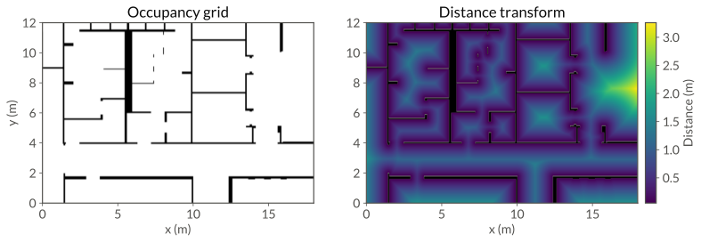
The corridor. Left, the occupancy grid. Right, the distance transform over the free space, with walls in black and lighter colors for higher clearance.#
4. Plan for a disc robot#
A disc of radius \(r\) is collision-free when the distance at its center exceeds \(r\). The check below asks for a safety buffer of 10 cm on top.
robot_radius = 0.3
safety_margin = 0.10 # extra buffer beyond the robot radius
def is_valid(q):
return grid.distance_at(q[0], q[1]) > robot_radius + safety_margin
Full example: examples/tutorials/se2_planning.py
constexpr double robot_radius = 0.3;
constexpr double safety_margin = 0.10; // extra buffer beyond the robot radius
auto is_valid = [&grid](const Eigen::Vector3d& q) {
return grid.distance_at(q[0], q[1]) > robot_radius + safety_margin;
};
Full example: examples/tutorials/se2_planning.cpp

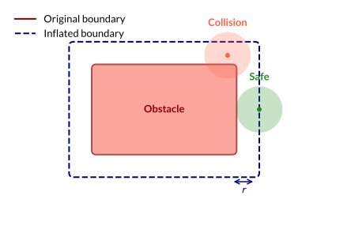
Inflating an obstacle by the robot radius \(r\). A disc whose center lies outside the dashed line is collision-free.#
plan wraps the manifold as an OMPL state space, runs G-RRT*, and smooths the result.
iterations=6000 and seed=1 give the same path on every run.
# A manifold whose workspace bounds span the corridor map.
se2 = geodex.SE2(wx=1.0, wy=1.0, wtheta=1.0,
x_lo=0.0, x_hi=world_w, y_lo=0.0, y_hi=world_h)
start = np.array([2.0, 5.0, 0.0])
goal = np.array([12.0, 6.0, -np.pi / 2.0])
settings = geodex.PlanSettings(
iterations=6000,
planner=geodex.planners.GreedyRRTstar(range=4.5, greedy_ratio=0.9,
rewire_factor=0.5),
collision_check_resolution=grid.resolution(),
seed=1,
)
result = geodex.plan(se2, start, goal, is_valid, settings=settings)
print(f"holonomic: solved={result.solved} cost={result.cost:.3f}")
Full example: examples/tutorials/se2_planning.py
// A manifold whose workspace bounds span the corridor map.
geodex::SE2<> se2{geodex::SE2LeftInvariantMetric{1.0, 1.0, 1.0},
geodex::SE2LeftExponentialMap{},
Eigen::Vector3d(0.0, 0.0, -M_PI),
Eigen::Vector3d(world_w, world_h, M_PI)};
const Eigen::Vector3d start{2.0, 5.0, 0.0};
const Eigen::Vector3d goal{12.0, 6.0, -M_PI / 2.0};
gp::PlanSettings settings;
settings.iterations = 6000;
settings.planner = gp::planners::GreedyRRTstar{
.range = 4.5, .greedy_ratio = 0.9, .rewire_factor = 0.5};
settings.collision_check_resolution = grid.resolution();
settings.seed = 1;
auto result = gp::plan(se2, start, goal, is_valid, settings);
std::printf("holonomic: solved=%d cost=%.3f\n", result.solved, result.cost);
Full example: examples/tutorials/se2_planning.cpp
It prints holonomic: solved=True cost=18.399, the length of the path under the metric.

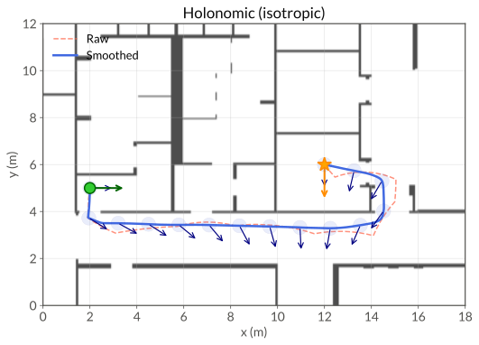
The holonomic plan. The planner’s path is dashed, the returned path solid, with the disc drawn along it.#
The disc robot following the returned path.#
A robot that must answer in time sets a time budget in seconds instead, and leaves
iterations at 0. The path can then change from run to run (see
Reproducibility).
settings = geodex.PlanSettings(time=1.0) # seconds, used when iterations is 0
Full example: examples/tutorials/se2_planning.py
gp::PlanSettings settings;
settings.time = 1.0; // seconds, used when iterations is 0
Full example: examples/tutorials/se2_planning.cpp
5. Plan for a differential-drive robot#
Whether a rectangle collides depends on its position and its heading.
geodex::collision::FootprintGridChecker moves the footprint’s samples to the
pose, reads the distance grid at each, and returns the smallest distance minus the safety
margin. A pose is valid when every sample is clear. The spacing of the samples and the
margin decide how close an obstacle can come between two samples.
footprint = gc.PolygonFootprint.rectangle(half_length=0.35, half_width=0.25,
samples_per_edge=6)
checker = gc.FootprintGridChecker(grid, footprint, safety_margin=0.10)
is_valid = checker.is_valid
Full example: examples/tutorials/se2_planning.py
auto footprint =
gc::PolygonFootprint::rectangle(/*half_length=*/0.35, /*half_width=*/0.25,
/*samples_per_edge=*/6);
gc::FootprintGridChecker checker{&grid, footprint, /*safety_margin=*/0.10};
auto is_valid = [&checker](const Eigen::Vector3d& q) {
return checker.is_valid(q);
};
Full example: examples/tutorials/se2_planning.cpp

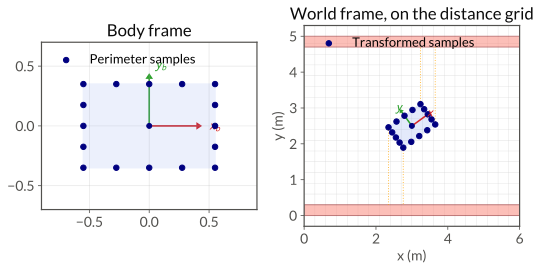
Left, the perimeter samples in the body frame. Right, the samples at a pose on the distance grid, with the distance query from some of them to the nearest wall.#
The differential-drive metric makes sliding expensive.
se2 = geodex.SE2(wx=1.0, wy=10.0, wtheta=1.0,
x_lo=0.0, x_hi=world_w, y_lo=0.0, y_hi=world_h)
Full example: examples/tutorials/se2_planning.py
geodex::SE2<> se2{geodex::SE2LeftInvariantMetric{1.0, 10.0, 1.0},
geodex::SE2LeftExponentialMap{},
Eigen::Vector3d(0.0, 0.0, -M_PI),
Eigen::Vector3d(world_w, world_h, M_PI)};
Full example: examples/tutorials/se2_planning.cpp
The metric charges driving backward as much as driving forward.
geodex::integration::ompl::DirectionalMotionValidator rejects any tree edge
whose body-forward component, the first entry of the SE(2) logarithm, is below minus the
reverse budget, -0.5 m here.
settings = geodex.PlanSettings(
iterations=6000,
planner=geodex.planners.GreedyRRTstar(range=7.0, greedy_ratio=0.9,
rewire_factor=1.1),
collision_check_resolution=grid.resolution(),
seed=1,
)
result = geodex.plan(
se2, start, goal, checker.is_valid, settings=settings,
motion_validator=geodex.DirectionalMotionValidator(max_reverse_length=0.5),
)
print(f"differential drive: solved={result.solved} cost={result.cost:.3f}")
Full example: examples/tutorials/se2_planning.py
using geodex::integration::ompl::DirectionalMotionValidator;
auto directional = [&se2](const ompl::base::SpaceInformationPtr& si) {
return std::make_shared<DirectionalMotionValidator<geodex::SE2<>>>(
si.get(), se2,
std::make_shared<ompl::base::DiscreteMotionValidator>(si.get()),
/*max_reverse_length=*/0.5);
};
gp::PlanSettings settings;
settings.iterations = 6000;
settings.planner = gp::planners::GreedyRRTstar{
.range = 7.0, .greedy_ratio = 0.9, .rewire_factor = 1.1};
settings.collision_check_resolution = grid.resolution();
settings.seed = 1;
auto result =
gp::plan(se2, start, goal, is_valid, settings,
/*heuristic=*/geodex::heuristics::Euclidean{}, directional);
std::printf("differential drive: solved=%d cost=%.3f\n", result.solved,
result.cost);
Full example: examples/tutorials/se2_planning.cpp
It prints differential drive: solved=True cost=22.292.

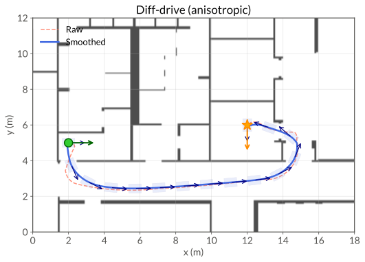
The differential-drive robot in the corridor, driving forward along arcs.#
The differential-drive robot following the returned path.#
6. Keep away from walls#
The clearance metric (geodex::SDFConformalMetric,
geodex.ClearanceMetric in Python) scales a base metric by a factor that grows
near obstacles,
where \(\mathrm{sdf}(q)\) is the signed distance from the robot to the nearest obstacle,
\(\kappa\) the strength and \(\beta\) the falloff. A motion at \(q\) is
\(\sqrt{c(q)}\) times as long as under the base metric, 1.58 times at zero clearance for
\(\kappa = 1.5\). For the disc robot, geodex::collision::GridSDF wraps the
distance grid as a callable, and geodex::collision::InflatedSDF subtracts the
robot radius. A ConfigurationSpace puts the clearance metric on the SE(2) manifold.
# Base metric, and an SDF inflated by the robot radius for a circular robot.
base_metric = geodex.SE2LeftInvariantMetric(1.0, 1.0, 1.0)
inflated_sdf = gc.InflatedSDF(gc.GridSDF(grid), 0.3)
# Conformal clearance metric with kappa = 1.5 and beta = 3.0.
clearance_metric = geodex.ClearanceMetric(base_metric, inflated_sdf, 1.5, 3.0)
# SE(2) topology with the clearance geometry.
se2 = geodex.SE2(x_lo=0.0, x_hi=world_w, y_lo=0.0, y_hi=world_h)
cspace = geodex.ConfigurationSpace(se2, clearance_metric)
Full example: examples/tutorials/se2_planning.py
// Base metric, and an SDF inflated by the robot radius for a circular robot.
geodex::SE2LeftInvariantMetric base_metric{1.0, 1.0, 1.0};
gc::InflatedSDF inflated_sdf{gc::GridSDF{&grid}, 0.3};
// Conformal clearance metric with kappa = 1.5 and beta = 3.0.
geodex::SDFConformalMetric clearance_metric{base_metric, inflated_sdf, 1.5,
3.0};
// SE(2) topology with the clearance geometry.
geodex::SE2<> se2{base_metric, geodex::SE2LeftExponentialMap{},
Eigen::Vector3d(0.0, 0.0, -M_PI),
Eigen::Vector3d(world_w, world_h, M_PI)};
geodex::ConfigurationSpace cspace{se2, clearance_metric};
Full example: examples/tutorials/se2_planning.cpp

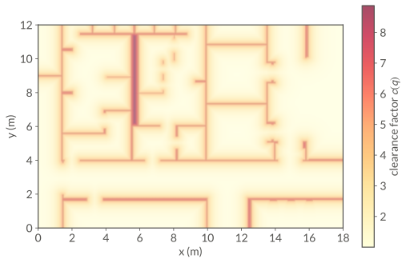
The factor \(c(q)\) over the corridor with \(\kappa = 1.5\) and \(\beta = 3\). Warm colors near walls mark a large factor.#

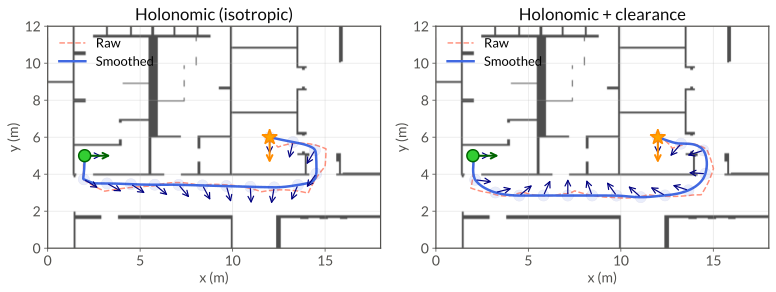
The disc robot. Left, the plain metric, whose path cuts close to walls. Right, the clearance metric with \(\kappa = 1.5\) and \(\beta = 3\), whose path keeps its distance from the walls.#
The footprint checker’s operator() returns the signed clearance of the footprint, and
the same object serves as the planner’s validity check and the metric’s distance field.
footprint = gc.PolygonFootprint.rectangle(0.35, 0.25, 6)
checker = gc.FootprintGridChecker(grid, footprint, 0.01)
# Binary validity for the planner.
is_valid = checker.is_valid
# Continuous signed distance for the clearance metric, from the same object.
base_metric = geodex.SE2LeftInvariantMetric(1.0, 10.0, 1.0)
clearance_metric = geodex.ClearanceMetric(base_metric, checker, 1.5, 3.0)
se2 = geodex.SE2(wx=1.0, wy=10.0, wtheta=1.0,
x_lo=0.0, x_hi=world_w, y_lo=0.0, y_hi=world_h)
cspace = geodex.ConfigurationSpace(se2, clearance_metric)
Full example: examples/tutorials/se2_planning.py
auto footprint = gc::PolygonFootprint::rectangle(0.35, 0.25, 6);
gc::FootprintGridChecker checker{&grid, footprint, 0.01};
// Binary validity for the planner.
auto is_valid = [&checker](const Eigen::Vector3d& q) {
return checker.is_valid(q);
};
// Continuous signed distance for the clearance metric, from the same object.
geodex::SE2LeftInvariantMetric base_metric{1.0, 10.0, 1.0};
geodex::SDFConformalMetric clearance_metric{base_metric, checker, 1.5, 3.0};
geodex::SE2<> se2{base_metric, geodex::SE2LeftExponentialMap{},
Eigen::Vector3d(0.0, 0.0, -M_PI),
Eigen::Vector3d(world_w, world_h, M_PI)};
geodex::ConfigurationSpace cspace{se2, clearance_metric};
Full example: examples/tutorials/se2_planning.cpp
The differential-drive robot following the path under the clearance metric.#
7. Park a car#
The parking lot is a list of oriented rectangles (geodex::collision::RectObstacle),
four parked cars along a curb with a gap between cars 2 and 3.
car_hl, car_hw = 2.25, 0.9 # a 4.5 m x 1.8 m car
obstacles = [
gc.RectObstacle(5.0, 1.35, 0.0, car_hl, car_hw), # parked car 1
gc.RectObstacle(10.0, 1.35, 0.0, car_hl, car_hw), # parked car 2
gc.RectObstacle(21.0, 1.35, 0.0, car_hl, car_hw), # parked car 3
gc.RectObstacle(26.0, 1.35, 0.0, car_hl, car_hw), # parked car 4
gc.RectObstacle(15.0, -0.05, 0.0, 15.0, 0.05), # curb
gc.RectObstacle(15.0, 10.05, 0.0, 15.0, 0.05), # sidewalk
]
Full example: examples/tutorials/se2_planning.py
using RectObstacle = gc::RectObstacle;
constexpr double car_hl = 2.25, car_hw = 0.9; // a 4.5 m x 1.8 m car
std::vector<RectObstacle> obstacles = {
{5.0, 1.35, 0.0, car_hl, car_hw}, // parked car 1
{10.0, 1.35, 0.0, car_hl, car_hw}, // parked car 2
{21.0, 1.35, 0.0, car_hl, car_hw}, // parked car 3
{26.0, 1.35, 0.0, car_hl, car_hw}, // parked car 4
{15.0, -0.05, 0.0, 15.0, 0.05}, // curb
{15.0, 10.05, 0.0, 15.0, 0.05}, // sidewalk
};
Full example: examples/tutorials/se2_planning.cpp

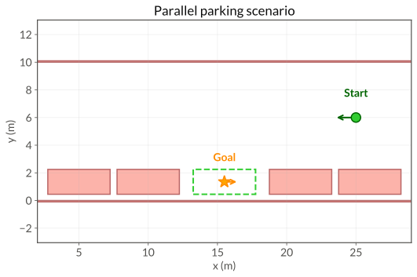
The parking lot. The car starts on the right (green) and parks in the gap (orange star).#
The car-like metric trades turning against driving at a turning radius of 1.5 m.
metric = geodex.SE2LeftInvariantMetric.car_like(1.5, 20.0)
# Weights wx = 1.0, wy = 20.0, w_theta = 2.25 (= 1.5^2)
Full example: examples/tutorials/se2_planning.py
auto metric = geodex::SE2LeftInvariantMetric::car_like(1.5, 20.0);
// Weights wx = 1.0, wy = 20.0, w_theta = 2.25 (= 1.5^2)
Full example: examples/tutorials/se2_planning.cpp
geodex::collision::RectSmoothSDF is a smooth signed distance to the rectangles,
a log-sum-exp approximation of the minimum. Its inflation subtracts the car’s half width
from every distance.
sdf = gc.RectSmoothSDF(obstacles, 20.0, car_hw)
# beta = 20 (smoothness), inflation = car_hw (half-width of the ego vehicle)
Full example: examples/tutorials/se2_planning.py
gc::RectSmoothSDF sdf{obstacles, 20.0, car_hw};
// beta = 20 (smoothness), inflation = car_hw (half-width of the ego vehicle)
Full example: examples/tutorials/se2_planning.cpp
The validity check tests the car’s rectangle against every obstacle with the
separating-axis test geodex::collision::rects_overlap().
def is_valid(q):
ego = gc.RectObstacle(q[0], q[1], q[2], car_hl, car_hw)
return not any(gc.rects_overlap(ego, obs) for obs in obstacles)
Full example: examples/tutorials/se2_planning.py
auto is_valid = [&](const Eigen::Vector3d& q) {
RectObstacle ego{q[0], q[1], q[2], car_hl, car_hw};
for (const auto& obs : obstacles) {
if (gc::rects_overlap(ego, obs)) return false;
}
return true;
};
Full example: examples/tutorials/se2_planning.cpp
The clearance metric with \(\kappa = 8\) keeps the car away from the parked cars. The parking maneuver reverses into the gap, and the plan does not use a directional validator.
base_metric = geodex.SE2LeftInvariantMetric.car_like(1.5, 20.0)
sdf = gc.RectSmoothSDF(obstacles, 20.0, car_hw)
clearance_metric = geodex.ClearanceMetric(base_metric, sdf, 8.0, 3.0)
se2 = geodex.SE2.car_like(1.5, 20.0, x_lo=0.0, x_hi=30.0, y_lo=0.0, y_hi=12.0)
cspace = geodex.ConfigurationSpace(se2, clearance_metric)
Full example: examples/tutorials/se2_planning.py
auto base_metric = geodex::SE2LeftInvariantMetric::car_like(1.5, 20.0);
gc::RectSmoothSDF sdf{obstacles, 20.0, car_hw};
geodex::SDFConformalMetric clearance_metric{base_metric, sdf, 8.0, 3.0};
geodex::SE2<> se2{geodex::SE2LeftInvariantMetric::car_like(1.5, 20.0),
geodex::SE2LeftExponentialMap{},
Eigen::Vector3d(0.0, 0.0, -M_PI),
Eigen::Vector3d(30.0, 12.0, M_PI)};
geodex::ConfigurationSpace cspace{se2, clearance_metric};
Full example: examples/tutorials/se2_planning.cpp

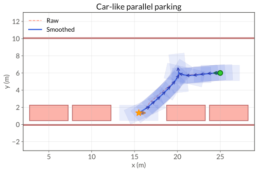
The car approaches from the right and reverses into the gap between the parked cars.#
The car’s footprint along the parking path.#
Near the start and the goal, the path can turn in place where a real car would need a multi-point turn.
8. Try it: plan without the directional validator#
Plan the differential-drive robot of step 5 again without motion_validator and measure
how far each path drives backward.
def reverse_travel(path):
"""Distance the robot drives backward, from the SE(2) logarithm of each edge."""
return sum(max(0.0, -se2.log(a, b)[0]) for a, b in zip(path[:-1], path[1:]))
free = geodex.plan(se2, start, goal, checker.is_valid, settings=settings)
print(f"backward driving: {reverse_travel(result.path):.3f} m with the validator, "
f"{reverse_travel(free.path):.3f} m without")
Full example: examples/tutorials/se2_planning.py
// Distance the robot drives backward, from the SE(2) logarithm of each edge.
auto reverse_travel = [&se2](const std::vector<Eigen::Vector3d>& path) {
double reverse = 0.0;
for (std::size_t i = 0; i + 1 < path.size(); ++i) {
reverse += std::max(0.0, -se2.log(path[i], path[i + 1])[0]);
}
return reverse;
};
const auto free = gp::plan(se2, start, goal, is_valid, settings);
std::printf("backward driving: %.3f m with the validator, %.3f m without\n",
reverse_travel(result.path), reverse_travel(free.path));
Full example: examples/tutorials/se2_planning.cpp
It prints backward driving: 0.147 m with the validator, 15.984 m without. Without the
validator, the robot drives most of the corridor backward.
Where to go next#
Navigation plans three Clearpath bases with these tools.
Metrics as Robot Models covers the left-invariant and clearance metrics.
Path Smoothing covers the smoother and what it checks.
geodex Basics introduces manifolds, metrics and geodesics.